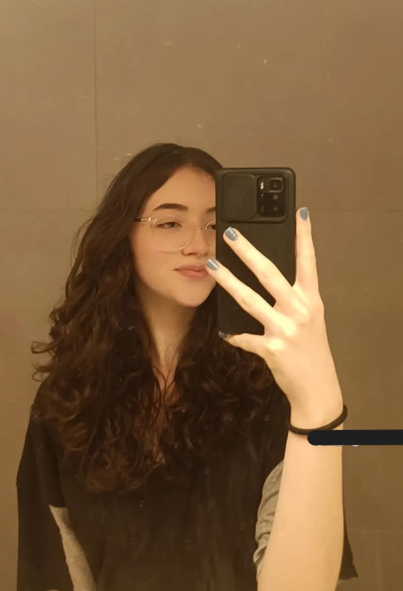

MUITO PRAZER, SOU A NATÁLIA.
Meu nome é Natália, tenho 16 anos e sou estudante de Ensino Médio. Já estudei em três escolas: Gusmão (em São Leopoldo), Anchieta (em Porto Alegre) e atualmente faço o Ensino Médio no Senac de São Leopoldo.
Com o início do meu estudo em técnico de informática para a internet, já adquiri experiência nas linguagens de programação em HTML, CSS e JavaScript. Comecei a estudar essa área de desenvolvimento WEB, porque pode me ajudar, futuramente, a ingressar no mercado de trabalho.